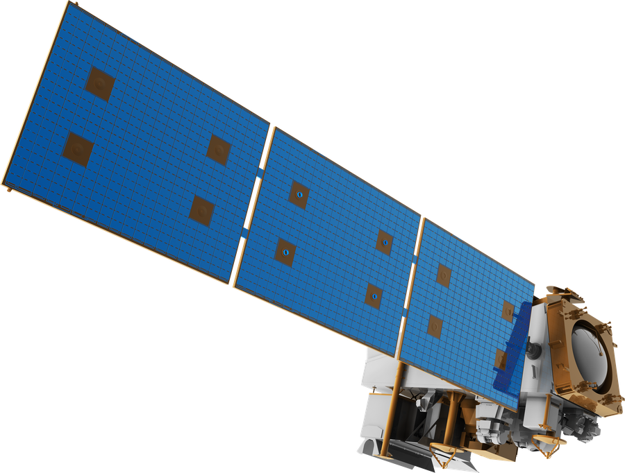
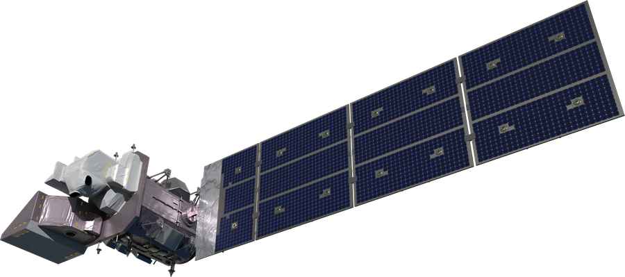

Sesgo Geográfico
Sobresaturación de 4 sitios
Atacama, Hawái, Islandia y Antártida concentran casi toda la literatura, dejando fuera regiones clave en los Andes y el Pacífico.
 ATLANIA
ATLANIA



NASA SPACE APPS CHALLENGE · OBSERVATORIO PLANETARIO
Somewhere between Earth and the stars.
¿Y si para comprender otros planetas primero tuviéramos que volver a descubrir el nuestro?
01 · Contexto y Dolor Real
Las misiones Artemis y Marte necesitan probar rovers, trajes y hábitats en la Tierra, pero la selección actual tiene tres brechas críticas:
Atacama, Hawái, Islandia y Antártida concentran casi toda la literatura, dejando fuera regiones clave en los Andes y el Pacífico.
Que un paisaje se parezca en foto no garantiza equivalencia térmica, topográfica ni operacional para hardware espacial.
Ningún sitio terrestre replica gravedad lunar/marciana, vacío o radiación; omitir dónde se rompe la analogía invalida pruebas.
02 · Propuesta de Valor
Incluyendo sitios sub-explorados en Sudamérica y 8 enclaves estratégicos en Ecuador (Galápagos y los Andes).
Comparación directa contra escenarios reales de Artemis y Marte con pesos científicos por objetivo.
Puntaje normalizado (0–100) con radar en vivo, clustering K-Means/k-NN y exportación para QGIS.
03 · Arquitectura Técnica & Rigor Científico
7 parámetros: T2M_MAX/MIN, precipitación, viento WS10M, humedad RH2M, irradiancia solar y presión.
Muestreo de 5 puntos por coordenada para calcular pendiente local y rugosidad topográfica real.
5 vectores (Topografía, Geología, Térmica, Hidrología/Hielo, Subterráneo) + K-Means y k-NN.
Reporta dónde se rompe la analogía: gravedad, vacío/CO₂, radiación y meteorización biológica.
/api/evaluate y /api/evaluate-region consultan NASA POWER y Copernicus DEM al instante para cualquier coordenada nueva, sin inventar geología no medida.
Pruebas automatizadas en pytest y frontend, más catálogo precompilado con fallback climático si falla la red.
04 · Prototipo Funcionando
Pasamos a Terra Explorer (/explorer) para mostrar el flujo completo de extremo a extremo en vivo.
Elegir Mare Tranquillitatis o Jezero Crater y ver el ranking de los 35 sitios.
Inspeccionar Galápagos Lava Tubes o Chimborazo: radar de 5 ejes y límites físicos.
Hacer clic en cualquier punto del mapa 3D (/api/evaluate) y exportar para QGIS.
05 · Valor Local y Alcance Global
Desde los tubos de lava basáltica de Galápagos (refugio térmico lunar) hasta Chimborazo, Antisana, Quilotoa, Sangay y El Reventador para pruebas de robótica en pendiente, ceniza y altura.
Reduce costos iniciales de prospección para universidades, equipos de rovers y agencias. El formato GeoJSON y la API permiten integrarlo directo a flujos GIS existentes.
06 · Siguiente Sprint & Cierre
Integrar capas espectrales (ASTER / Sentinel-2) para inferir basaltos, sulfatos y arcillas automáticamente.
Campañas piloto con facultades de geología y robótica en Ecuador para calibrar pesos de terreno.
Envío comunitario de nuevos sitios análogos con revisión por pares y exportación directa a misiones.
"ATLANIA: transformando datos abiertos de la NASA en la hoja de ruta terrestre hacia la Luna y Marte. Muchas gracias."